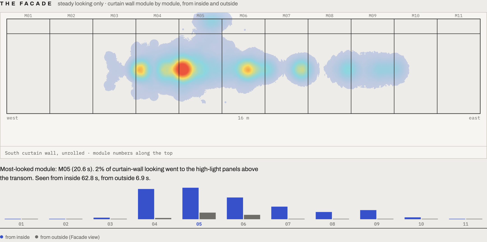

The facade, module by module

M05 · 20.6 s
most-looked module
2%
of looking went above the 2.7 m transom
62.8 s · 6.9 s
steady looking from inside, and from the garden
Visual Vibes · glazing study · report